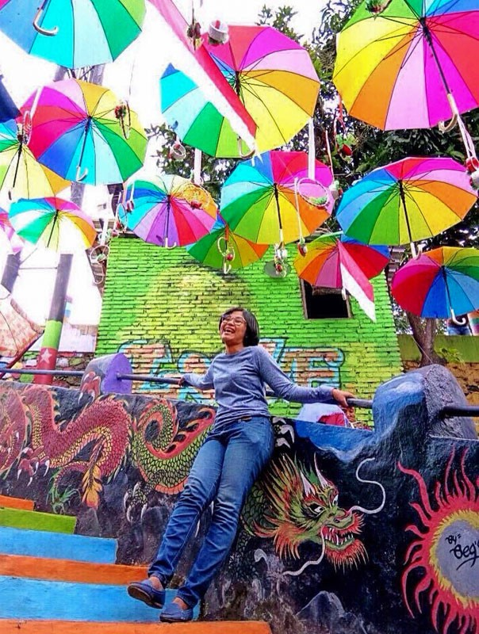
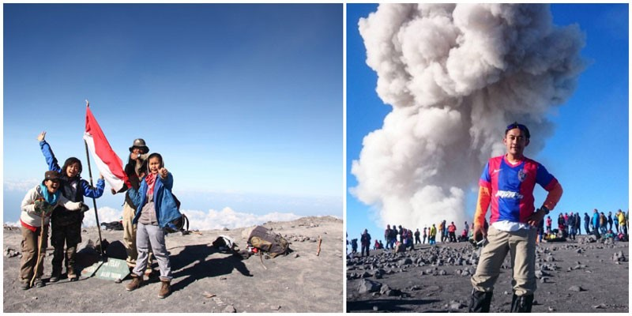
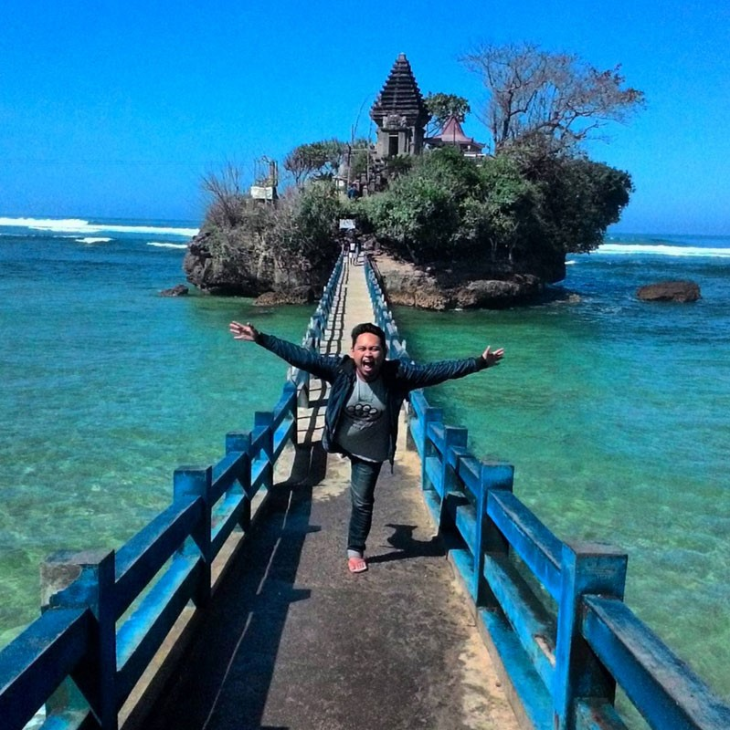

About Malang
Kota Malang adalah sebuah kota yang terletak di Provinsi Jawa Timur, Indonesia. Kota ini terletak 90 km sebelah selatan Surabaya dan merupakan
kota terbesar di kedua di Jawa Timur setelah Surabaya, serta merupakan salah satu kota terbesar di Indonesia menurut jumlah penduduk. Selain itu,
Malang juga merupakan kota terbesar kedua di wilayah Pulau Jawa bagian selatan setelah Bandung. Kota Malang berada di dataran tinggi yang cukup sejuk,
dan seluruh wilayahnya berbatasan dengan Kabupaten Malang. Luas wilayah kota Malang adalah 252,10 km2.
Indonesia karena banyak universitas dan politeknik negeri maupun swasta yang terkenal hingga seluruh Indonesia dan menjadi salah satu tujuan
pendidikan berada di kota ini, beberapa di antaranya yang paling terkenal adalah Universitas Brawijaya, Universitas Negeri Malang, dan Universitas
Muhammadiyah Malang.
Budaya
-
Topeng Malangan
Di Kota Malang terdapat seni pemahatan topeng yang asli bercirikan khas Malang. Berdasarkan beberapa catatan sejarah menyebutkan bahwa Topeng Malang adalah sebuah kesenian kuno yang usianya lebih tua dari keberadaan Kota Apel ini.
Topeng ini pun sudah diperkenalkan sejak zaman kerajaan Gajayana kala itu. Para pemahat Topeng Malangan sudah turun temurun sampai sekarang, walaupun jumlahnya tidak terlalu melonjak banyak. Pada jaman dulu apresiasi pada Topeng Malang ini diwujudkan dengan bentuk pertunjukan saat ada acara tertentu seperti pernikahan, selamatan, dan hiburan pejabat tinggi kala itu.
Topeng Malang sedikit berbeda dengan topeng yang ada di Indonesia, dimana corak khas dari pahatan kayu yang lebih kearah realis serta menggambarkan karakter wajah seseorang. Ada banyak ragam dari jenis Topeng Malang yang dibuat seperti karakter jahat, baik, gurauan, sedih, kecantikan, ketampanan, bahkan sampai karakter yang sifatnya tidak teratur. -
Tari Topeng Malang

“Tari Topeng Malang” dapat diartikan sebagai gerakan badan yang berirama dengan diiringi bunyi-bunyian dengan menggunakan penutup muka yang menyerupai muka orang. Tari ini murni berasal dari Malang. Kedungmonggo sebagai sebuah dusun di kaki gunung Kawi merupakan salah satu kantong persebaran seni budaya tari topeng Malang. Kondisi daerah Malang secara eksternal juga didukung dengan polesan konstruksi budaya Hindu-Jawa di lokasi sekitar dusun Kedungmonggo mengingat akar sejarah kemunculan tari topeng adalah hasil ritual kebudayaan Hindu.
-
Bahasa Walikan
Bahasa Walikan Malang berasal dari pemikiran para pejuang tempo doeloe yaitu kelompok Gerilya Rakyat Kota (GRK). Bahasa khusus ini dianggap perlu untuk menjamin kerahasiaan, efektifitas komunikasi sesama pejuang selain juga sebagai pengenal identitas kawan atau lawan. Jaman penjajahan, banyak pasukan Belanda yang menyusup menjadi mata-mata di dalam kelompok pejuang Malang. Mata-mata ini banyak yang mampu berkomunikasi dalam bahasa daerah dengan tujuan menyerap informasi dari kalangan pejuang GRK.
Seorang tokoh pejuang Malang pada saat itu yaitu Pak Suyudi Raharno mempunyai gagasan untuk menciptakan bahasa baru bagi sesama pejuang sehingga dapat menjadi suatu identitas tersendiri sekaligus menjaga keamanan informasi. Bahasa tersebut haruslah lebih kaya dari kode dan sandi serta tidak terikat pada aturan tata bahasa baik itu bahasa nasional, bahasa daerah (Jawa, Madura, Arab, Cina) maupun mengikuti istilah yang umum dan baku. Bahasa campuran tersebut hanya mengenal satu cara baik pengucapan maupun penulisan yaitu secara terbalik dari belakang dibaca kedepan. -
Wisata
Malang juga memiliki banyak sekali tempat wisata yang menarik dan berwawasan (edukasi) terutama bagi anak-anak. Ada beribu tempat wisata di daerah malang ini, mungkin yang paing terkenal adalah wisata batu jatim park dan dibawah ini saya mengajak anda untuk datang ke tempat itu begitu pula dengan tempat lainnya. Saya jamin jika kalian datang ke salah satu tempat yang saya sarankan, kalian tidak akan menyesal.
-
Bersepeda di udara di Coban Rais
Terletak sekitar 16 km dari Malang, Coban Rais merupakan air terjun setinggi 20 meter yang mengalir melalui perbukitan hijau yang dipenuhi semak belukar. Tak hanya pemandangannya yang menyenangkan mata ini, tetapi juga gerbang masuk menuju air terjun yang tidak boleh dilewatkan terutama bagi para penggemar foto.
Kayuhlah sepeda di udara atau berpose di gardu pandang kayu berbentuk hati yang menghadap ke arah nelantara dan berfotolah sebanyak mungkin! Di sini juga terdapat sebuah kebun bunga yang letaknya hanya beberapa kilometer.
Kunjungilah tempat ini saat hari sedang cerah, karena jalan menuju air terjun bisa menjadi gelap dan berlumpur jika hari sedang hujan. Medannya memang sedikit menantang, tetapi pemandangan indah di sekitarnya akan membuat Anda tak letih melangkah. Tidak ada penjaja makanan di sini, jadi jangan lupa untuk membawa bekal makanan Anda masing-masing ya.
Catatan: Anda perlu berjalan kurang lebih 5km dari area parkir untuk mencapai air terjun*Coban Rais*
Tiket Masuk: Rp10.000
Biaya Parkir: Rp2.500
Tiket Spot Foto Selfie: Rp10.000
Lokasi: Jalur Lingkar Barat No.8, Oro-Oro Ombo, Kec. Batu, Kota Batu, Jawa Timur 65316. Koordinat di sini.
Cara ke Sana: Tempat ini terletak di Batu, tepatnya di Desa Oro-Oro Ombo, kurang lebih 20 km dari Kota Malang. -
Berjalan-jalan di sekitar pemukiman penuh warna di Kampung Warna Warni
Kampung Jodipan, sebuah area kumuh yang kusam, kini telah menjelma menjadi sebuah lokasi wisata yang menarik. Berawal dari ide sejumlah mahasiswa Universitas Muhammadiyah Malang yang ingin mengubah wajah kumuh tersebut melalui lukisan murah dan mewarnai tembok-tembok luar rumah warga di sana.
Di sini, Anda bisa menyaksikan rumah penuh warna bak pelangi dari Kampung Warna-Warni dan mengambil gambar-gambar pemandangan yang penuh warna ini.
3-b. Menyeberangi sungai di atas jembatan mendebarkan: Jembatan Kaca
Jembatan ini merupakan daya tarik terkini yang baru mulai dioperasikan pada bulan Oktober 2017 dan menghubungkan antara Kampung Jodipan dengan Kampung Tridi. Jembatan yang melintas di atas Su ngai Brantas tersebut memiliki dasar kaca dan disebut-sebut mirip dengan jembatan kaca di Zhangjiajie, Cina.
Jembatan yang jadi spot foto favorit teranyar ini dibangun dengan model jembatan gantung berwarna kuning emas sepanjang 25 meter dan lebar 1,25 meter pada ketinggian 9,5 meter.
3-c. Payung-payung yang melayang-layang: Balai Payung
Balai Payung terletak di komplek utama Juanda. Tempat ini biasanya ramai dipenuhi oleh para wisatawan karena tempatnya yang sempurna untuk berfoto-foto.

3-d. Ketika gambar menjadi nyata: Lukisan 3D
Selain tembok penuh warna, Anda juga bisa menemukan tempat yang terdapat mural 3D dengan gambar hiu, gorilla, T-Rex, dan binatang lainnya! Dilukis dengan indah, lorong tangga ini dihias dan diciptakan untuk membuat spot foto yang menarik. Turunlah melalui tangga ini dan nikmati suasana penuh warna dari kampung ini.
*Kampung Warna Warni*
Lokasi: Jodipan, Kecamatan Blimbing, Kota Malang
Cara ke Sana: Kampung Warna Warni Jodipan terletak di Jalan Temenggungan Ledok, Kesatrian, Kecamatan Blimbing, Malang, Jawa Timur. Berada sekitar 400 meter sebelah selatan Stasiun Kereta Api Malang Kota Baru. Anda bisa naik angkot dengan kode ABG/ABH, AGJ/AJH, AMG/AMH atau MT dari stasiun. Lalu turun di dekat Jembatan Brantas di Jalan Gatot Subroto. Kampung Warna Warni Jodipan bisa dilihat dari jembatan dan membutuhkan waktu sekitar 5 menit berjalan kaki dari sini menuju ke kampung tersebut. -
Taman hiburan keluarga nomor satu di Jawa Timur: Jawa Timur Park
Digadang-gadang sebagai salah satu taman hiburan paling keren di Indonesia, Jawa Timur Park atau Jatim Park dilengkapi dengan berbagai atraksi dan wahana seru berstandar internasional.
Taman hiburan ini memiliki ukuran yang sangat luas sampai-sampai harus dibagi menjadi dua kawasan yang begitu besar! Saking luasnya, satu hari saja tak akan cukup untuk menikmati semua isinya. Tak seberapa jauh dari Jawa Timur Park 2, terdapat akomodasi Pohon Inn yang menjanjikan para tamu yang menginap panorama indah pegunungan.
Di taman ini Anda juga bisa bersantap sambil ditemani sekelompok macan tutul!
PS: Pengunjung keluarga dari seluruh nusantara selalu memadati taman ini di akhir pekan, jadi akan lebih nyaman kalau Anda berkunjung saat weekdays.
5-a. Seru-seruan di berbagai wahana dan main air di kolam raksasa: Jawa Timur Park 1 Setidaknya ada 55 buah wahana yang terdapat di taman hiburan yang dikelola oleh Jawa Timur Park Group ini – dari yang mengaduk-aduk perut Anda, sampai wahana sains dan sejarah yang interaktif.
“Taman Belajar dan Rekreasi” adalah motto dari Jawa Timur Park 1, oleh karena itu di sini banyak terdapat wahana yang berhubungan dengan ilmu pengetahuan, budaya dan sejarah. Di Galeri Etnik Nusantara misalnya, pengunjung akan diajak berkeliling dari Sabang sampai Merauke untuk melihat kekayaan budaya yang ada di Indonesia. Bahkan kolam renang raksasanya pun dihiasi patung tokoh sejarah Ken Arok, Ken Dedes dan Mpu Gandring.
Membentang seluas 11 hektar di kawasan perbukitan, Anda membutuhkan waktu satu hari penuh untuk mencoba semua wahana di Jawa Timur Park 1. Tak perlu khawatir kalau kehabisan tenaga, tempat-tempat makan banyak tersedia di sini untuk membantu memulihkan energi sebelum berkeliling lagi.
*Jawa Timur Park 1*
Lokasi: Jalan Kartika 2, Kota Wisata Batu, Kota Batu
Telepon: 0341-597 777
Jam Operasional: 08.30 – 16.30
Tiket Masuk: Rp60.000,- (hari biasa) | Rp80.000,- (akhir pekan)
5-b. Bertualang di tengah alam liar: Jawa Timur Park 2
Sama-sama sebagai taman belajar dan rekreasi, namun Jawa Timur Park 2 lebih dikhususkan untuk meningkatkan kesadaran masyarakat akan lingkungan hidup dan satwa liar. Kalau ingin menghindari taman rekreasi yang ramai dan penuh dengan anak-anak kecil berlarian ke sana ke mari, maka Jawa Timur Park 2 ini pas untuk Anda.
Pengunjung biasanya akan mulai dari Museum Satwa yang menampilkan berbagai diorama satwa liar di habitat aslinya. Bahkan ada juga model tyrannosaurus rex alias T-rex serta makhluk hidup prasejarah lainnya dalam ukuran asli! Dijamin, Anda bakal puas jeprat-jepret di sini.
Selanjutnya, mari beralih ke hewan sungguhan yang ada di Batu Secret Zoo. Kebun binatang ini dihuni oleh ratusan spesies burung dari berbagai penjuru dunia. Anda pun berkesempatan untuk berinteraksi langsung dengan beberapa burung-burung langka yang terancam punah, atau beberapa jenis kucing besar seperti singa, harimau dan macan tutul. Tak ketinggalan ada pula koleksi ular yang (untungnya) berada di balik dinding kaca.
*Jawa Timur Park 2*
Lokasi: Jalan Oro Oro Ombo No. 9, Kelurahan Temas, Kecamatan Batu, Kota Batu
Telepon: 0341-597 777
Jam Operasional: 10.00 – 18.00
Tiket Masuk: Rp75.000,- (hari biasa) | Rp105.000,- (akhir pekan)
5-c. Taman hiburan dan edukasi interaktif: Eco Green Park Fun & Study
Melihat satwa di kebun binatang sudah biasa. Berjalan-jalan di habitat mereka, baru luar biasa! Tujuan didirikannya Eco Green Park adalah untuk meningkatkan kesadaran masyarakat akan pentingnya konservasi alam. Tempat ini tadinya adalah lahan perkebunan tanaman jati dan jeruk. Dan kini, sisa-sisa tanaman tersebut masih bisa ditemukan di taman rekreasi ini.
Selain memiliki koleksi burung yang sangat banyak (dari flamingo sampai elang), Eco Green Park juga punya misi mengedukasi pengunjung tentang gaya hidup berkelanjutan. Anda bisa belajar banyak soal pertanian, peternakan, hingga cara bercocok tanam secara hidroponik yang dapat diterapkan di rumah. Bahkan ornamen-ornamen yang ada di taman ini sebagian besar terbuat dari bahan-bahan daur ulang.
Wahana teranyar yang ada di taman rekreasi ini dan langsung mencuri perhatian adalah Rumah Terbalik. Tentu seru rasanya memasuki sebuah rumah yang semua isinya jungkir balik – furnitur ada di langit-langit dan plafon ada di bawah!
*Eco Green Park Fun & Study*
Lokasi: Jawa Timur Park, Jl. Oro Oro Ombo No.9A, Kelurahan Temas, Kecamatan Batu, Kota Batu
Telepon: 0341-512 525
Jam Operasional: 09.00 – 17.00
Tiket Masuk: Rp40.000,- (hari biasa) | Rp60.000,- (akhir pekan) -
Rasakan gemuruh perut bumi di bawah kaki Anda!: Gunung Semeru, Taman Nasional Bromo Tengger Semeru
Menjulang setinggi 3.676 meter di atas permukaan laut, Gunung Semeru (atau warga lokal biasa menyebutnya ‘Mahameru’) merupakan gunung tertinggi di Pulau Jawa.
Popularitas gunung ini pun kian melesat berkat film popular 5cm yang dirilis pada tahun 2012 silam. Gunung Semeru kerap dianggap sebagai ‘batu loncatan’ bagi para pendaki yang ingin menambah pengalaman, karena hanya membutuhkan waktu sekitar tiga hari untuk mendaki dan menuruninya, tergantung kondisi fisik.
Pendakian dimulai di Desa Ranu Pane, di mana para pendaki dapat menyiapkan bekal dan beristirahat sejenak sebelum memulai ekspedisi keesokan harinya. Tahap pertama perjalanan akan berujung di Ranu Kumbolo, sebuah danau menakjubkan yang dikelilingi bukit-bukit hijau di ketinggian 2.400 meter di atas permukaan laut. Biasanya, di sinilah para pendaki akan mendirikan tenda dan bermalam sebelum melanjutkan perjalanan. Kalau ingin menguji daya tahan tubuh Anda terhadap suhu yang dingin, boleh lho mencelupkan kaki di danau.
Setelah melewati Ranu Kumbolo, maka selanjutnya yang akan dihadapi oleh para pendaki adalah bukit Tanjakan Cinta. Konon jika berhasil melaluinya tanpa sekalipun berhenti dan beristirahat, Anda bakal menemukan cinta sejati!
Dan di akhir pendakian yang melelahkan, segala penat akan terbayar lunas di padang Oro-oro Ombo yang tampak begitu dengan hamparan bunga Edelweiss (lambang keabadian) serta bunga Verbana Barisliensis Vell – mirip bunga Lavender – yang hanya bisa ditemukan di Indonesia.

Karena status Gunung Semeru merupakan gunung berapi aktif, maka berkemah di sekitar puncak gunung tidak diperkenankan karena terdapat gas beracun yang mematikan. Untuk menaklukkan Mahameru, pendaki dapat berkemah di Kalimati dan memulai pendakian pada pukul 2 dini hari dalam keadaan gelap gulita. Di tahap terakhir ini Anda perlu ekstra waspada, karena tak jarang batu-batu besar berjatuhan dan bisa membahayakan.

Apakah segala daya upaya dan risiko menaklukkan Sang Mahameru sebanding dengan kepuasannya? Semua ada di tangan Anda!
Catatan: Jika Anda termasuk kategori pendaki pemula, sangat disarankan untuk menggunakan jasa pemandu mengingat pendakian di Gunung Semeru merupakan hal yang amat serius dan membutuhkan persiapan matang – dari transportasi, perizinan, perbekalan, dan tentu saja kondisi fisik prima.
*Gunung Semeru, Taman Nasional Bromo Tengger Semeru, Jawa Timur*
Telepon: 0341-491 828
Tiket Masuk: Rp22.500,-
Cara ke Sana: Dari Malang, mengarah ke timur menuju Pasar Tumpang. Anda dapat menyewa jip menuju Desa Ranu Pane – lokasi pos pendakian awal – dengan biaya sekitar Rp30.000,-. Alternatif selain menggunakan angkutan umum dan menyewa jasa pemandu lepas, Anda juga bisa menggunakan jasa agen perjalanan. Jangan ragu untuk banyak bertanya sebelum memastikan reservasi. Cek juga berbagai rekomendasi dari yang sudah pernah menggunakannya. Lintang Buana Tours menawarkan customer support dan memungkinkan Anda untuk bisa mengatur perjalanan sesuai kehendak (bahkan sampai ke yang detail). Sedangkan Bromo Adventurelandmenawarkan kepuasan dan kenyamanan maksimal dengan biaya sekitar Rp460.000,- per orang. -
Beberapa pantai indah di malang
5-a. Tanah Lot-nya Malang: Pantai Balekambang
Pasti Anda bisa langsung menerka kenapa pantai ini dijuluki sebagai Tanah Lot-nya Malang. Tepat sekali. Di sini terdapat sebuah pura nan anggun, Amerta, Jati, yang berdiri kokoh di atas Pulau Ismoyo, Pura Amerta Jati didirikan sebagai tempat ibadah umat Hindu untuk merayakan berbagai upacara, seperti ‘Suroan’ yang bertepatan dengan tahun baru Jawa atau Hari Raya Nyepi.

Bukan hanya sunset saja yang bisa dinikmati dari Pantai Balekambang. Saat air laut sedang surut, akan terlihat terumbu-terumbu karang yang eksotis di bibir pantai. Anda pun bisa berjalan-jalan di antaranya, sambil melihat beraneka ikan kecil berwarna-warni yang asik lalu-lalang berenang di sela-sela terumbu karang.
Garis pantai sepanjang 2 kilometer ini termasuk landai dan terdiri dari tiga buah pantai kecil yang diberi nama seperti tokoh pewayangan: Anoman, Wisanggeni, dan Ismoyo.
*Pantai Balekambang*
Lokasi: Dusun Sumber Jambe, Desa Srigonco, Kecamatan Bantur, Kabupaten Malang
Telepon: 0857 6455 6423
Tiket Masuk: Rp5.000,-
5-b. Buktikan sendiri keunikannya: Pantai Tiga Warna
Pantai yang masih jarang diekspos ini menyimpan sebuah keunikan yang cukup bikin penasaran para travelers.
Karena berada di kawasan hutan konservasi, untuk berkunjung ke sini Anda perlu reservasi setidaknya seminggu sebelumnya (atau satu bulan jika Anda berencana menghabiskan akhir pekan) untuk memastikan tidak terlalu banyak pengunjung yang memadati area.
Gradasi warna air laut dari biru ke hijau hingga putihnya pasir hanyalah sebagian kecil pesona yang dimiliki pantai ini. Perjalanan menuju ke sana pun memberikan pengalaman yang tak kalah berkesan.
Dimulai dari Konservasi Mangrove Clungup, yaitu hutan bakau yang terdapat tepat di muara pertemuan antara laut dan sungai. Selain membantu mencegah abrasi, rindangnya pepohonan ini juga berfungsi sebagai peneduhi dari teriknya sinar matahari.
Setelah berjalan singkat ke arah selatan, pengunjung dapat beristirahat untuk sekadar memulihkan tenaga. Jangan lama-lama ya, karena perjalanan menuju destinasi utama masih membutuhkan waktu sejam lagi. Tapi tak akan terasa kok, karena ditemani oleh pemandangan laut dan pantai yang indah di sebelah kanan dan tetumbuhan hijau di sebelah kiri.
Selanjutnya Anda harus memanjat bukit hingga akhirnya terlihat Si Pantai Tiga Warna. Gradasi warna airnya yang begitu unik pasti membuat tak sabar untuk buru-buru tiba di sana dan terjun ke air!
Cara lain untuk menikmati keindahan Pantai Tiga Warna yang begitu alami dan bening ini adalah dengan menggunakan peralatan snorkeling. Deretan terumbu karang yang indah di sekitar pantai ini pasti akan tambah membuat Anda jatuh hati! (Anda bisa menyewa satu set peralatan snorkeling dan jaket pelampung hanya dengan Rp15.000,- saja!).
*Pantai Tiga Warna*
Lokasi: Kecamatan Sumbermanjing Wetan, Kabupaten Malang
Tiket Masuk: Rp6.000,-
Jam Operasional: 08.00 – 16.00
-
-
Kuliner
Setidaknya ada 3 alasan kenapa banyak pelancong ingin datang ke kawasan Malang Raya. Pertama, karena Malang bagian selatan memiliki deretan pantai yang indah. Sepanjang pesisir, traveler bisa menikmati deburan ombak, pantai berpasir putih, hingga snorkeling untuk melihat keindahan bawah laut.
Alasan selanjutnya mengapa Malang menjadi buruan adalah karena banyaknya tempat wisata dan hiburan di Malang, khususnya di bagian Kota Batu. Terakhir, Malang menyimpan banyak sekali tempat wisata kuliner yang menyajikan hidangan nikmat, unik, dan sayang untuk dilewatkan. Saat ke Malang, jangan lupa untuk berwisata kuliner di tempat-tempat terbaik yang tersaji di bawah ini.
-
Puthu
Warung putu legendaris in didirikan sejak lama oleh Bu Soepijah. Meski hanya menjual aneka jajanan dan kudapan ringan yang lezat seperti Kue Putu, Cenil, Lupis dan Klepon, namun peminatnya tetap membludak hingga saat ini.
*Puthu Lanang Celaket*
Harga: Mulai Rp10.000
Alamat: Jl. Jaksa Agung Suprapto, Gang Buntu RT 03, Samaan, Klojen, Malang
Telepon: 0817 530 365
Jam Operasional: Selasa-Minggu, 17.30 – 21.30 -
Angsle & Ronde
Menghangatkan tubuh di malam yang dingin di Kota Malang rasanya lebih cocok jika Anda menyambangi kedai Angsle dan Ronde Titoni. Bayangkan betapa nikmatnya menyeruput semangkuk kuah jahe dari menu angsle dan ronde racikan kedai yang sudah berdiri selama 70 tahun ini.
*Angsle & Ronde Titoni*
Harga: Rp7.000 – Rp9.000
Alamat: Jln. Zainul Arifin No. 17, Sukoharjo, Klojen, Kota Malang
Telepon: (0341) 808 292
Jam Operasional: Senin – Sabtu, 18.00 – 00.00 -
Bakpao Boldy
Dinamakan Bakpao Boldy karena tempat berjualannya, Jalan Mangun Sarkoro, dulu dikenal dengan nama Jalan Boldy. Ada setidaknya 7 varian rasa yang bisa Anda coba, yaitu ayam cincang, babi cincang, ayam kecap, babi kecap, kacang hijau, tausa dan kacang tanah. Cocok juga lho dibawa pulang sebagai buah tangan.
*Bakpao Boldy*
Harga: Mulai Rp9.000
Alamat: Jl. Mangun Sarkoro No. 25, Jodipan, Blimbing, Kota Malang
Telepon: (0341) 364 020
Jam Operasional: 07.00 – 17.00 -
Bakso Malang
Sepertinya tidak ada kera ngalam yang tidak tahu warung bakso ini. Bukan hanya karena kualitas rasa seporsi bakso yang istimewa, salah satu bakso terenak di Malang ini juga dikenal karena lokasinya yang menyerempet bahaya, tepat di pinggiran rel kereta api yang masih aktif digunakan. Jadi, bila kamu mampir dan menikmati seporsi bakso campur super dengan isian yang wah di sini, ada kemungkinan juga akan melihat kereta api lewat di depan warung. Wow!
*Bakso President*
Lokasi: Jl. Batanghari No.5, Rampal Celaket, Klojen, Kota Malang, Jawa Timur
Harga: Mulai dari 16,000 IDR per porsi
-
Malang merupakan kota terbesar kedua di Jawa Timur, dan dikenal dengan julukan kota dingin. Selain dikenal dengan julukan Kota dingin, julukan Kota Malang
di mata masyarakat Indonesia beraneka ragam seperti contohnya Paris van East Java, Kota Wisata, Kota Militer, Kota Sejarah, Kota Olahraga, Kota Apel, Kota Susu,
Kota Kuliner serta salah satunya ialah kota Budaya dan Kota Keseni.
Kekayaan etnis dan budaya yang dimiliki Kota Malang berpengaruh terhadap kesenian tradisional yang ada. Salah satunya yang terkenal adalah Wayang
Topeng Malangan (Topeng Malang), namun kini semakin terkikis oleh kesenian modern. Gaya kesenian ini adalah wujud pertemuan tiga budaya (Jawa Tengahan,
Madura, dan Tengger). Hal tersebut terjadi karena Malang memiliki tiga sub-kultur, yaitu sub-kultur budaya Jawa Tengahan yang hidup di lereng gunung Kawi,
sub-kultur Madura di lereng gunung Arjuna, dan sub-kultur Tengger sisa budaya Majapahit di lereng gunung Bromo-Semeru.
Di kota Malang juga terdapat tempat yang merupakan sarana apresiasi budaya Jawa Timur yaitu Taman Krida Budaya Jawa Timur, di tempat ini sering ditampilkan
aneka budaya khas Jawa Timur seperti Ludruk, Ketoprak, Wayang Orang, Wayang Kulit, Reog, Kuda Lumping, Sendra tari, saat ini bertambah kesenian baru yang semakin
berkembang pesat di kota Malang yaitu kesenian “BANTENGAN” kesenian ini merupakan hasil dari kreatifitas dan inovasi masyarakat asli Kota Malang